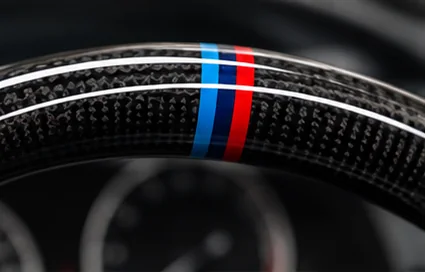
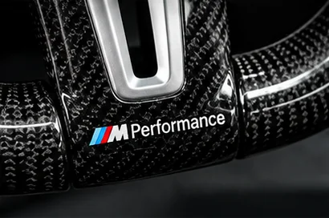
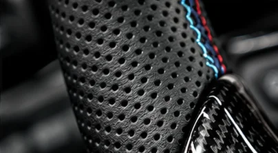
OEM look. Atitudine sport.
Volanul e punctul în care șoferul și mașina se întâlnesc. Finisaj, poziție, funcție și o prezență care schimbă tot interiorul.
Nu vindem povești. Construim upgrade-uri care se văd, se aud și se simt. Car Audio, CarPlay, retrofituri OEM, codări, ambient lighting și soluții custom — făcute cu mâna, cu capul și cu respect pentru mașină.
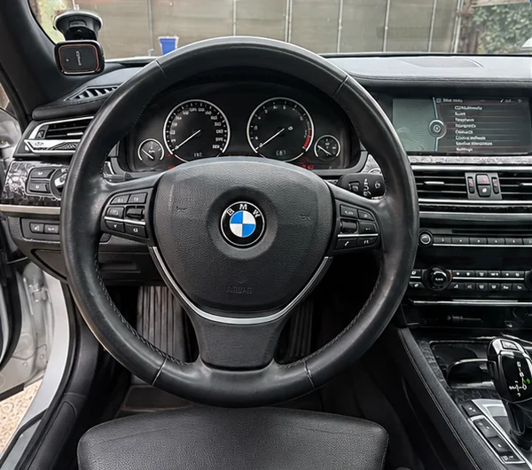
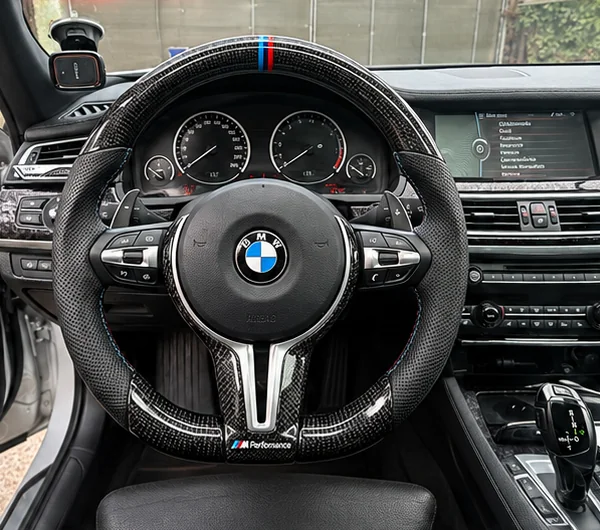
Volan M Performance · BMW Seria 7 F01. Upgrade premium cu carbon, piele perforată, padele și comenzi multifuncționale. Montaj și integrare profesională.
Aici vezi ce se întâmplă când o mașină intră pe mâna noastră: primește caracter, nu doar piese.



Volanul e punctul în care șoferul și mașina se întâlnesc. Finisaj, poziție, funcție și o prezență care schimbă tot interiorul.
Subwoofer cu incintă custom, difuzoare Deaf Bonce și amplificare Pride monobloc – configurații construite pentru impact și control.
Aici nu vorbim despre „se aude tare”. Vorbim despre impact, control și presiune. Deaf Bonce × Pride — un setup construit pentru omul care vrea ca muzica să se simtă în piept, nu doar în difuzoare.
Din Botoșani, dar fără mentalitate mică. Fiecare proiect este făcut să stea în fața oricărui om care apreciază munca bine făcută.
„Respect pentru rezultat! 🔥 Se vede atenția la detalii, iar volanul M Performance schimbă complet interiorul. Mulțumesc pentru profesionalism și pentru că a ieșit exact cum mi‑am dorit! 💪”
„Am montat CarPlay pe Audi și totul funcționează perfect. Mi-a explicat de la început ce variante am și ce se potrivește pe mașina mea. Montaj curat, fără modificări aiurea. Recomand!”
„Am venit pentru un upgrade la sistemul audio și diferența se simte imediat. Se vede că omul știe ce face și e atent la detalii. Foarte mulțumit de rezultat!”
„Am avut nevoie de câteva codări și de rezolvarea unei probleme la navigația BMW. Totul a fost făcut cum trebuie, fără bătăi de cap. Serios și priceput, recomand cu încredere.”
„Am montat o cameră de marșarier și am rămas foarte mulțumit. Funcționează direct pe ecranul original, exact cum îmi doream. Lucrare îngrijită și comunicare foarte bună.”
„Foarte mulțumit de lucrare. Am vrut să modernizez navigația fără să schimb aspectul original al bordului și a ieșit exact ce trebuie. Preț corect și atenție la detalii.”
„Am apelat pentru montarea luminilor ambientale și rezultatul a ieșit super. Totul este integrat frumos, fără cabluri la vedere. Cu siguranță revin și pentru alte modificări.”
Facem mașina să spună ceva despre omul care o conduce.
Dacă tot pui mâna pe o mașină, fă-o cum trebuie.
Ascultăm ce vrea omul, înțelegem mașina și construim upgrade-ul în jurul ei.
Pleacă o mașină care arată, sună și se simte mai bine.
Totul a pornit dintr-o regulă simplă: dacă tot pui mâna pe o mașină, fă-o cum trebuie. Fără improvizații care se văd de la ușă, fără cabluri lăsate la întâmplare și fără „merge și așa”.
Fiecare mașină care intră aici vine cu povestea ei. Una vrea sunet care să lovească. Alta vrea un interior care să arate ca și cum așa a ieșit din fabrică. Alta vrea tehnologie modernă fără să-și piardă identitatea.
Și fiecare proprietar vine cu respectul lui pentru mașină. Noi îl respectăm la fel. Ascultăm ce vrea omul, înțelegem mașina și construim upgrade-ul în jurul ei.
De la un Q5 care își schimbă atitudinea cu o grilă Honeycomb și CarPlay, la un F01 care primește un volan M Performance sau la un sistem Deaf Bonce × Pride făcut să se audă și să se simtă — fiecare proiect primește propria personalitate.
Aici nu pleacă doar o mașină „cu ceva montat”. Pleacă o mașină care arată, sună și se simte mai bine. Asta e povestea noastră. Din Botoșani, cu muncă, respect și atenție la detalii.
Upgrade-uri pentru confort, tehnologie, sunet și aspect, realizate cu integrare cât mai apropiată de OEM.
Sunetul nu e doar volum. E presiune, control și caracter. Subwoofere, amplificare, difuzoare, DSP, cablare și reglaj până când sistemul sună așa cum trebuie.
Telefonul tău e modern. Mașina nu trebuie să rămână în trecut. CarPlay și Android Auto integrate pe sistemul original, fără să stricăm ce era bun.
Aici începe partea serioasă: funcții noi, echipamente noi și integrare care trebuie să pară că a fost acolo din prima zi.
Nu ghicim. Citim configurația, alegem ce se potrivește și configurăm mașina exact pentru ce vrea proprietarul.
Interiorul trebuie să aibă atmosferă. RGB, accente și lumină pusă unde trebuie — suficient cât să se simtă, nu cât să pară kitsch.
Mai mult control, mai puține surprize. Camere și senzori integrați în display-ul mașinii, cu montaj curat.
Ecran, navigație, multimedia — alegem soluția după mașină, nu după ce avem pe raft.
Detaliile fac diferența. Volane, comenzi, confort și upgrade-uri custom pentru omul care vrea ceva făcut pentru mașina lui.
Proiectele păstrate în portofoliu, acum completate cu cele mai recente lucrări.
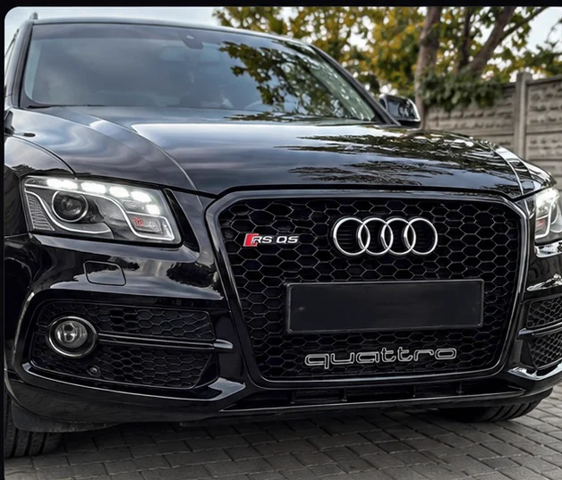
Audi Q5 2010
Q5-ul ăsta nu voia să fie încă un Q5. Honeycomb, accente RS Q5 și Quattro, apoi CarPlay pe ecranul original. Același suflet OEM, dar cu o atitudine mult mai grea.
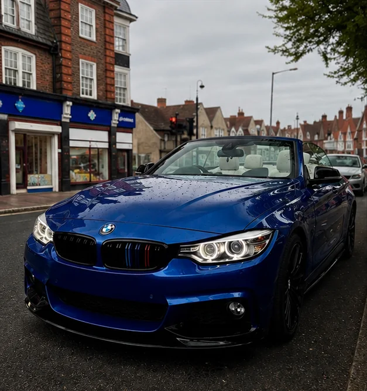
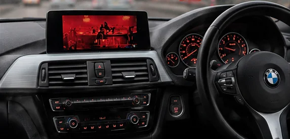
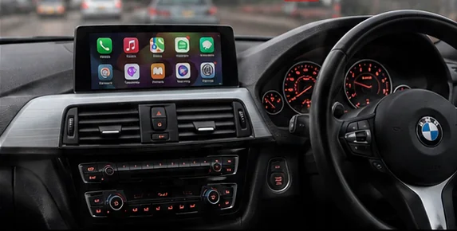
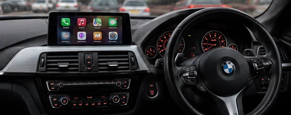
BMW Seria 4 Cabrio
Cabrio-ul ăsta vine cu volan dreapta și personalitate proprie. Am păstrat sistemul original, am băgat CarPlay-ul unde trebuie și am lăsat bordul să vorbească singur.
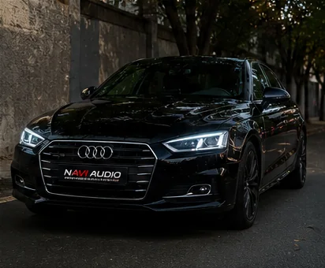
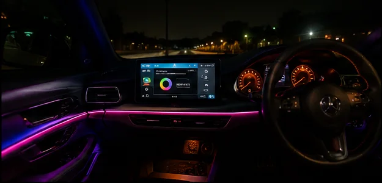
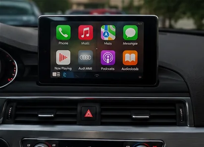
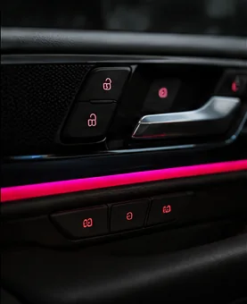
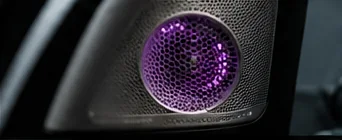
Audi A5 2019
A5-ul nu avea nevoie de o schimbare de identitate. Avea nevoie de tehnologie nouă. Wireless CarPlay, integrare discretă și zero compromisuri la aspectul original.
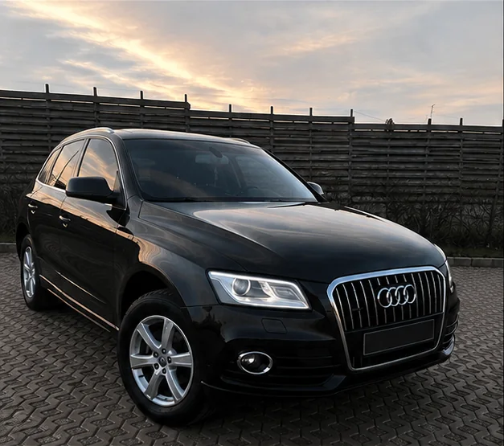
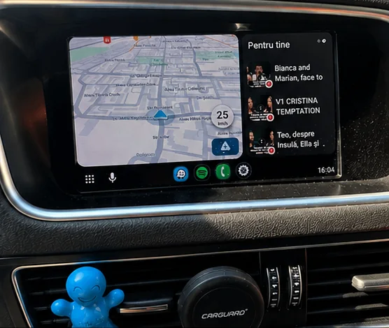
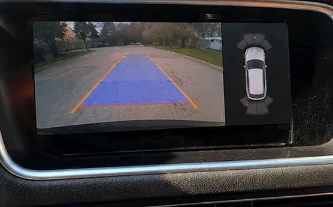
Audi Q5 2017
Q5-ul ăsta a primit ochi în spate și minte nouă: CarPlay, Android Auto și cameră marșarier pe ecranul original. Totul integrat, nimic aruncat la întâmplare.
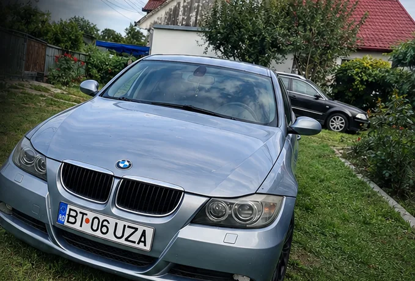
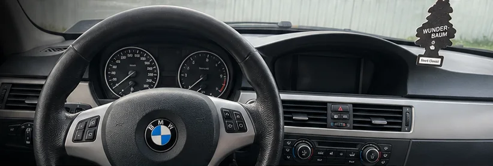
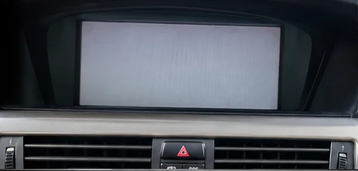
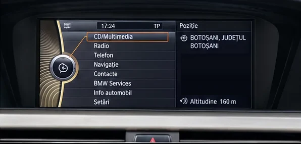
BMW E90 / E9X
CCC-ul era blocat într-o poveste pe care mulți o cunosc: ecran alb, bootloop și liniște. Diagnostic, reparație, codare, testare — și BMW-ul își vede din nou de drum.
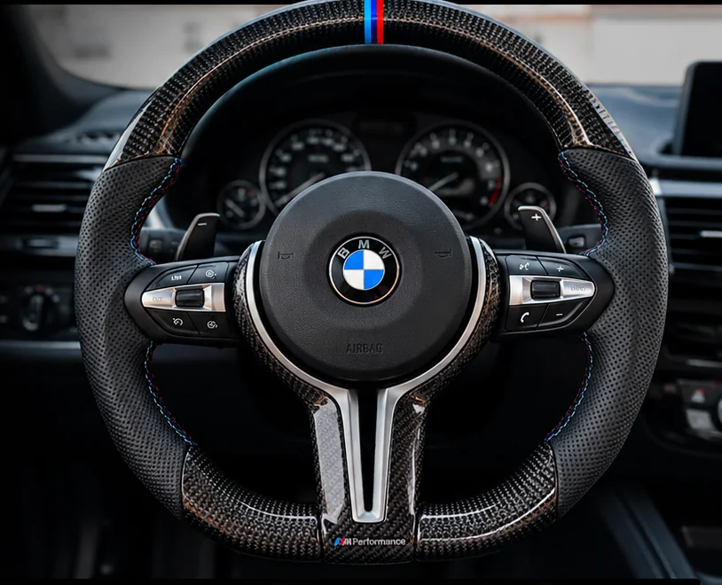
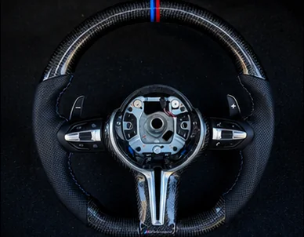
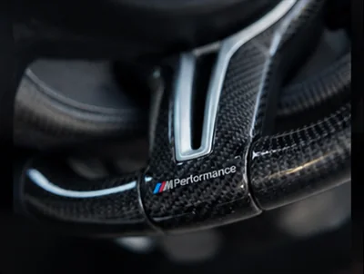
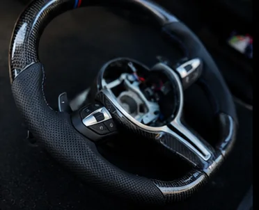
BMW M Performance
Nu e doar un volan. E primul lucru pe care îl simți când te urci la volan. Carbon, piele perforată, padele și comenzi — exact genul de detaliu care schimbă toată atmosfera din habitaclu.
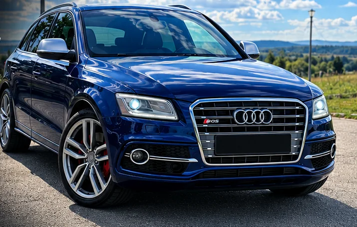
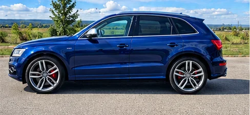
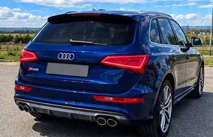
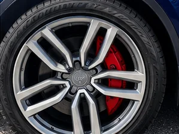
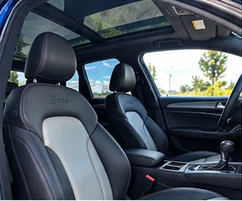
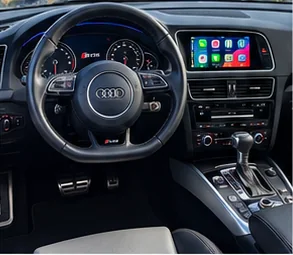
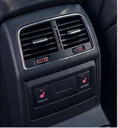
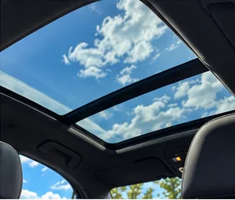
Audi SQ5 2014
SQ5-ul ăsta vine cu prezență din fabrică, dar noi i-am dat și mai multă personalitate: Bi-TDI, sound active, 21”, ambient RGB, interior Exclusive și CarPlay. Genul de mașină care nu cere atenție — o primește.
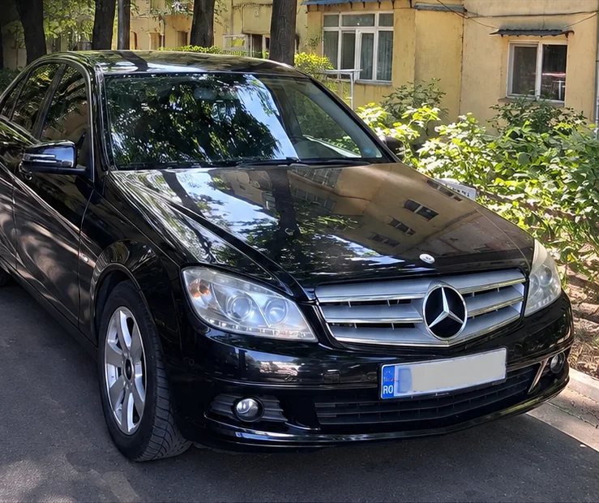
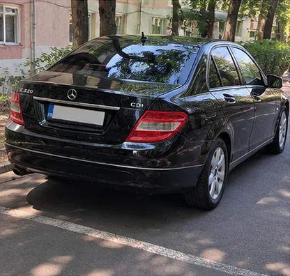
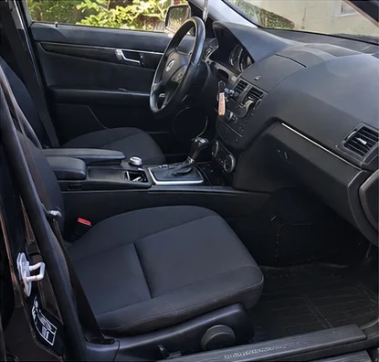
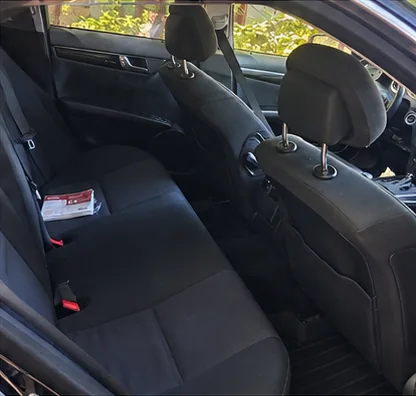
Mercedes-Benz C-Class W204
W204-ul are genul lui de eleganță: discret, dar cu atitudine. Un proiect pentru omul care nu are nevoie să strige ca să fie observat.
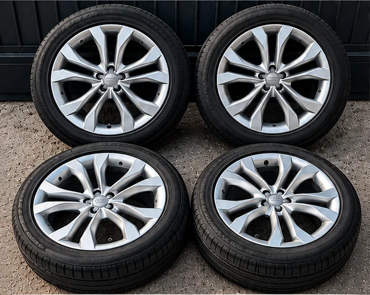
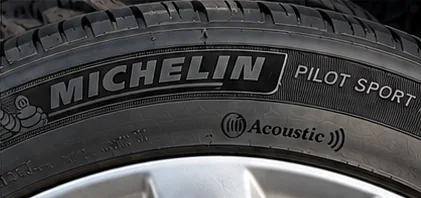
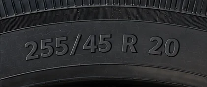
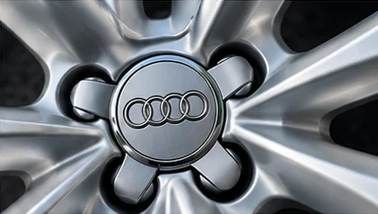
Jante Audi SQ5
Set original SQ5 de 20”, 255/45 R20. Pentru cine știe că o mașină bună stă altfel pe niște jante care îi respectă linia.
Volane BMW și Audi, piese premium și upgrade-uri pentru omul care vrea ca interiorul mașinii să aibă personalitate. Fiecare produs este prezentat clar, iar compatibilitatea se verifică înainte de montaj.
Carbon, piele perforată, padele și comenzi multifuncționale. Un volan care schimbă instant atmosfera într-un F01. Pentru omul care vrea să simtă upgrade-ul de fiecare dată când pune mâna pe el.
Piesă pentru cine vrea să scoată interiorul din banal. Compatibilitatea se verifică după configurația mașinii — pentru că lucrurile serioase se potrivesc, nu se forțează.
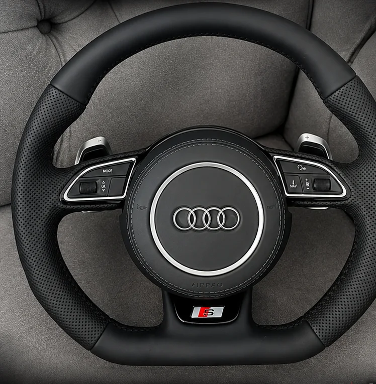
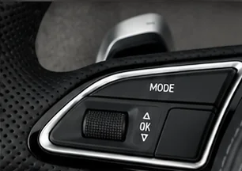
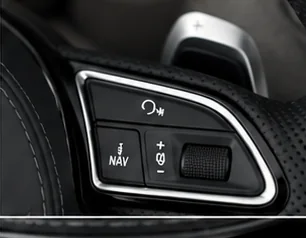
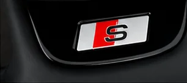
Audi S-line
Un volan care schimbă instant caracterul interiorului. Piele perforată, design sportiv, comenzi multifuncționale și padele originale. Pentru omul care nu vrea doar să conducă — vrea să simtă fiecare kilometru. Compatibilitatea se verifică în funcție de configurația mașinii.
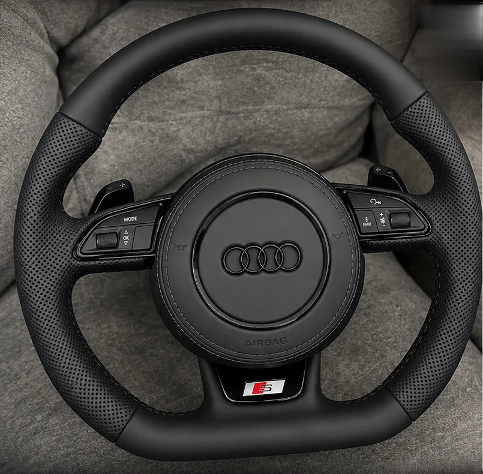
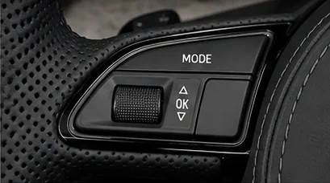
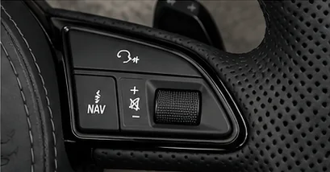
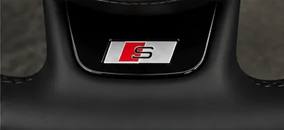
Audi S-line • Black Edition
Aspect mai agresiv, finisaje negre și look S-line. Genul de piesă care nu cere explicații când deschizi ușa — se vede din prima. Piele perforată, comenzi multifuncționale și padele. Compatibilitatea finală se verifică după model și configurație.
Mercedes-Benz
Un produs sau proiect nu se judecă după o poză. Scrie-ne și îți spunem exact ce este, pentru ce merge și dacă merită pentru mașina ta.
Nu montăm piese ca să umplem o listă. Construim rezultate pe care proprietarul să le privească și să zică: „da, exact asta voiam.”
Cablurile dispar, liniile rămân. Tot ce se vede trebuie să arate curat. Tot ce nu se vede trebuie făcut corect.
Nu există două mașini identice și nici doi proprietari identici. Upgrade-ul se construiește după mașină și după omul care o conduce.
Înainte să plece, verificăm tot. Pentru că respectul pentru client începe exact în momentul în care îi predăm cheia.